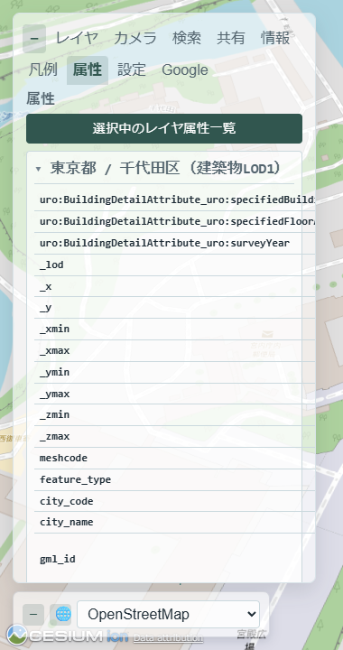
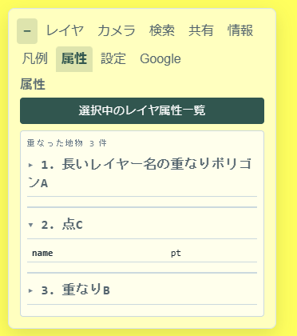

使い方
📊 属性テーブル
「属性」タブまたはベクトル検索パネルの「選択中のレイヤ属性テーブル」ボタンで開く、画面下部の表形式パネルです。選択中または全ベクターレイヤーの属性・値を一覧し、文字列検索・列フィルタ・列ソート・行クリック FlyTo・Σ集計（GROUP BY）に対応します。クエリ系レイヤーも選択肢に出し、内容は DB に対して直接クエリして取得します（描画範囲ではなくデータ全体が対象）。「フィルター反映」ボタンで現在の絞り込み条件を地図表示へ適用・解除でき、CSV / TSV / XLSX ボタンで、検索フィルタ・ソート適用後の全行を UTF-8 BOM 付き（Excel 文字化け対策）・代表点 lon/lat 列付きで出力できます。「WKT」チェックを ON にすると先頭にジオメトリの WKT 列が付きます（QGIS の CSV エクスポート GEOMETRY=AS_WKT 相当。GeoJSON/ogrsql は行のジオメトリ参照、GPKG/DuckDB 系は出力実行時にだけジオメトリを取得するため、通常の一覧表示は軽いままです）。XLSX は初回のみ SheetJS を CDN から遅延読み込みします。Σ 集計モード中は、表示中の GROUP BY 表（集計キー・件数・sum/avg/min/max）がそのまま出力されます。
🔍 フィルター
属性テーブルまわりの絞り込みは用途別に5段階あり、QGIS の属性テーブル →「条件式でフィルタ」→ プロバイダフィルタ（subsetString）の流れと同じ関係になっています。
| 手段 | 入口 | 効く範囲 | 永続性 |
|---|---|---|---|
| 文字列検索 | 一覧上部の検索ボックス | 一覧の行のみ | なし（表示のみ） |
| 列フィルタ | 一覧上部の属性・演算子・条件値 | 一覧の行のみ | なし（表示のみ） |
| SQL「一覧を絞る」 | 一覧の「SQL」ボタン → ダイアログ | 一覧の行のみ（WHERE 式 or SELECT） | なし（表示のみ・地図は変わらない） |
| 地図表示フィルタ | 一覧の「フィルター反映」ボタン（トグル） | 地図上の該当レイヤー（条件に合わない地物を非表示） | なし（セッション内の表示のみ・.kasc/データ不変） |
| レイヤフィルタ（where=） | SQL ダイアログ「レイヤフィルタ」/ レイヤ行の ⏷ / .kasc 初期記述 / AI setLayerFilter | レイヤ表示＋属性一覧（ベクター検索索引は全件のまま） | .kasc 行へ書戻し・QGIS Live 連携 |
| 新規レイヤ（SQL） | SQL ダイアログ「新規レイヤ」 | SELECT 結果を ogrsql: レイヤーとして追加 | .kasc に ogrsql: 行追加 |
SQL ダイアログ（QGIS の「条件式フィルタ」相当）は一覧の「SQL」ボタンかレイヤ行の ⏷ で開きます。入力は WHERE 式または SELECT 文（OGR SQL）を自動判別し、テストで実行件数を事前確認できます。ダイアログは現在の where=/クエリを初期値として開くため、.kasc に初期記述されたフィルタもそのまま引き継がれます。Ctrl+Enter は「一覧を絞る」、入力を空にして「レイヤフィルタ」を押すとフィルタ解除です。FID 疑似フィールドは0始まりの地物インデックスを指します。⏷ は Cesium では全ベクター型に表示され、他エンジンはクエリ系（gpkg:/duckdb:/sql:/ogrsql:）のみです。
地図表示フィルタ（「フィルター反映」ボタン）は、一覧上部の絞り込み条件（列フィルタ AND 文字列検索）を地図上の該当レイヤーにだけ適用し、条件に合わない地物を非表示にします。トグル式で、ON の間は条件を変えるたびに地図へ即時再適用されます。OFF にすると元の表示へ復帰します。表示だけを切り替えるため .kasc やレイヤーデータ・where= は変わらず、where= で絞り込まれたレイヤーにさらに重ねることもできます。対象は一覧で選択中の1レイヤーのみです。
where= の効果範囲：絞り込まれるのはレイヤ表示と属性一覧です（一覧の行は描画済み地物から構築され、クエリ系は条件付きで再クエリ）。全件読み込み系のベクター検索索引は引き続き全件対象のため、フィルタで見えなくなった地物も名称検索で見つけられます。未読み込みのレイヤーを一覧で選択した場合も where= 適用済みのソースから行を構築します。WHERE 式の文法は = != <> < <= > >=・AND/OR/NOT・括弧・IN・BETWEEN・LIKE/ILIKE・IS NULL・算術・|| 連結（評価はクエリ系が SQL エンジン、全件読み込み系が shared/where-eval.js）。
flowchart TB
subgraph IN["where= の入力経路（どれでも同じ状態へ）"]
K1[".kasc 行に初期記述
（QGIS subsetString のエクスポート含む）"]
K2["⏷ ボタン / 属性一覧「SQL」→「レイヤフィルタ」"]
K3["AI ツール setLayerFilter"]
end
K1 -->|applyInspector| W["item.where
（レイヤフィルタ状態）"]
K2 -->|applyLayerQueryFilter| W
K3 -->|applyLayerQueryFilter| W
W -->|syncLayerSourceLine| KOUT[".kasc 行へ書戻し
where=（行末・空で削除）"]
W -->|liveWritebackEntries| QGIS["QGIS Live
プロジェクトへ反映"]
W --> Q{"クエリ系？"}
Q -->|"gpkg / duckdb / sql / ogrsql"| SQL["SQLエンジンで WHERE 絞込
（再クエリ）"]
Q -->|"geojson / parquet / fgb / kml / shp / csv"| EVAL["shared/where-eval.js
クライアント評価"]
SQL --> MAP["レイヤ表示
（フィルタ済み地物のみ）"]
EVAL --> MAP
SQL --> ATTR["属性一覧
（描画地物 or SQL 再クエリで同条件）"]
MAP --> ATTR
EVAL -.->|"索引はフルソースから構築"| IDX["ベクター検索
（全件対象のまま）"]
LST["属性一覧「一覧を絞る」"] -.->|"表示のみ（地図・.kasc 不変）"| ATTR
📊 属性（Attr）表示
地物をクリックすると属性を Attr パネルに一覧表示します。重なった地物（ポリゴン等の面重なり）は scene.drillPick で最大16件を手前から順に拾い、件数付きヘッダー一覧として表示し、行クリックで個別属性を展開します。3D Tiles（構造化メタデータ Cesium3DTileFeature）・ベクター（entity/primitive）の各描画経路を同じ形式に正規化して扱います。


🔗 QGIS 連携（geo_webview）— 高度な設定は QGIS に任せる
フィルタ・スタイルの高度な条件設定は QGIS 側に任せるのがこの連携の考え方です。QGIS プラグイン geo_webview は、エクスポート時にレイヤーフィルタ（プロバイダ subsetString）を where= へ、そのまま引き継ぎます — Canvas 側で同等の条件式 UI を再現する必要はありません。逆方向もあり、Canvas で変更したレイヤフィルタは QGIS Live 連携で QGIS プロジェクトへ書き戻されます（geo_webview 4.11.0〜・POST /live/writeback）。
- geo_webview（QGIS プラグイン）
リポジトリ: https://github.com/yamamoto-ryuzo/qgis_live_harness/tree/master/qgis-plugin/geo_webview
ドキュメント: https://github.com/yamamoto-ryuzo/qgis_live_harness/tree/master/qgis-plugin/geo_webview/docs - フィルター（
where=） — 絞り込み条件は QGIS のクエリビルダ（レイヤーフィルタ / subsetString）で設定し、where=として引き継ぎ: V7: QGIS連携 — where= フィルタ引継ぎ・QGIS フィルタ式との互換性・ レイヤー → .kasc 行の対応・ 6-2 インスペクター（where=の書式） - QML スタイル（
style=） — 高度なスタイル設定も QGIS の .qml に任せて描画・凡例へ適用: スタイル（.qml）の再現・ 1-2 凡例（QML 由来の凡例スウォッチ・条件別表示）
設定方法（.kasc）
属性テーブルの「SQL」ボタンやレイヤ行の ⏷ から適用したレイヤフィルタは、以下の行として .kasc へ書き戻されます。逆に .kasc へ直接記述した where= も読み込み時にレイヤ・属性一覧・ダイアログ初期値へ反映されます。
geojson: レイヤー名 | URL | where=都道府県 = '愛知県' （行の最終オプション・値は改行までが式）
ogrsql: 河川(上位100件) | SELECT * FROM 'rivers' ORDER BY 延長 DESC LIMIT 100
ogrsql: 市区町村JOIN | SELECT a.*, b.人口 FROM '行政区域' a LEFT JOIN '人口表' b ON a.コード = b.コードwhere=は全ベクター行で使用可。クエリ系は SQL 評価、全件読み込み系はshared/where-eval.jsでクライアント評価しますogrsql:の FROM には読み込み済みレイヤータイトル・'ds'.layer形式・DATA/相対パス・URL を指定できます- QGIS 側のフィルタ式（subsetString）との方言対応は V7: QGIS連携 の「QGIS フィルタ式との互換性」を参照してください
関連ページ
- 1-3 検索 — ベクトル検索（レイヤー → 属性 → 値）
- 2-6 エクスポート — レイヤー全体のファイル出力
- 6-2 インスペクター —
ogrsql:・where=の書式 - V7: QGIS連携 —
where=の仕様・QGIS フィルタ式との互換性 - QGIS連携：実装済みの再現範囲 — geo_webview エクスポートの対応表
- geo_webview ドキュメント（GitHub） — QGIS 側プラグインの仕様